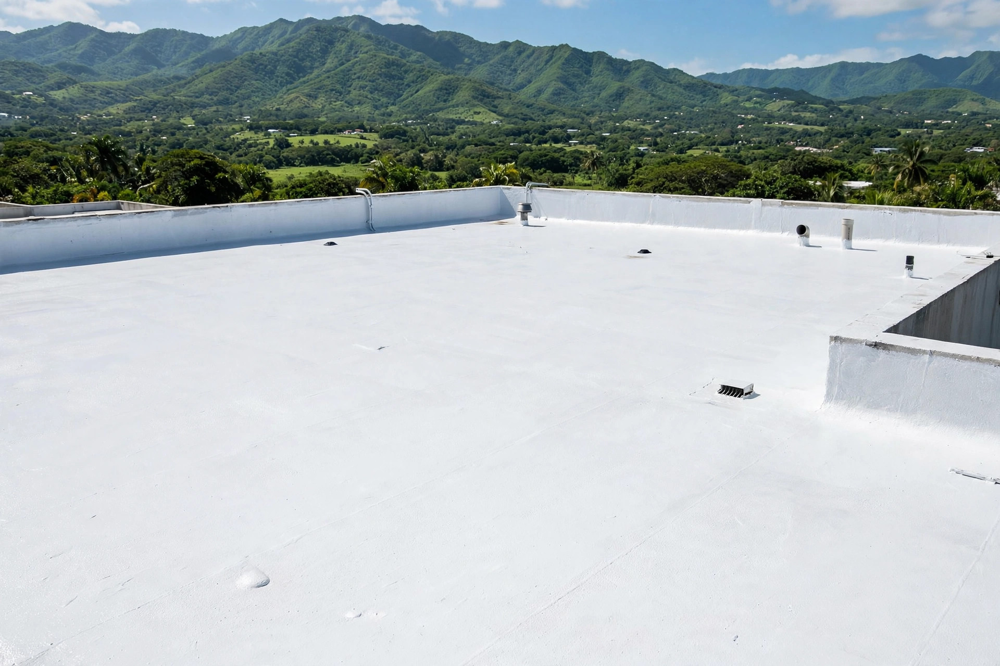
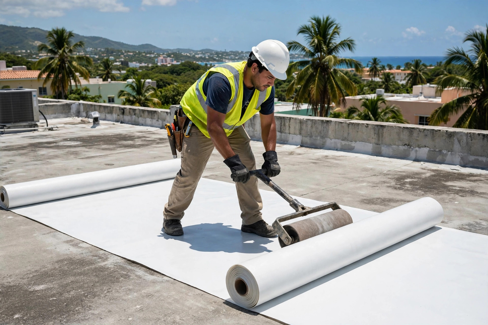
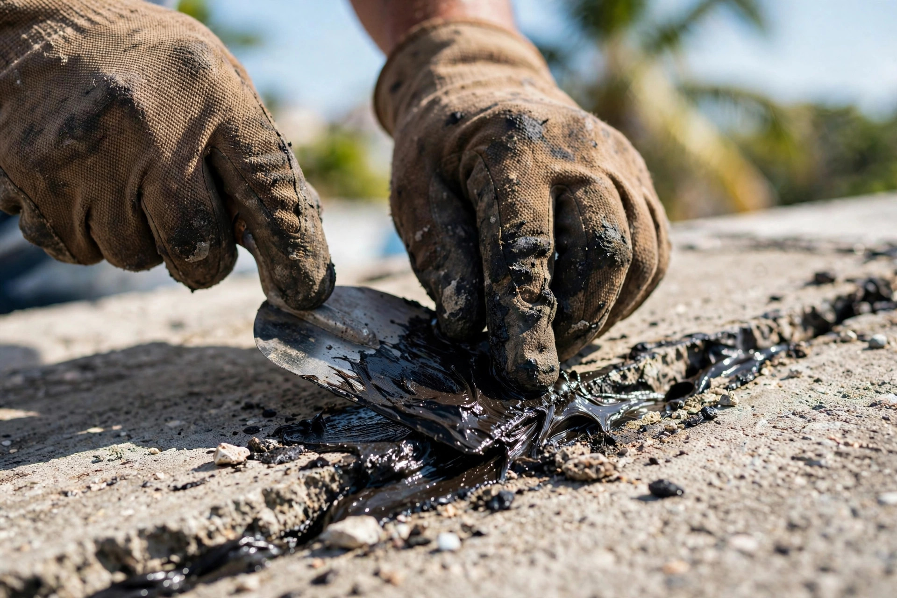
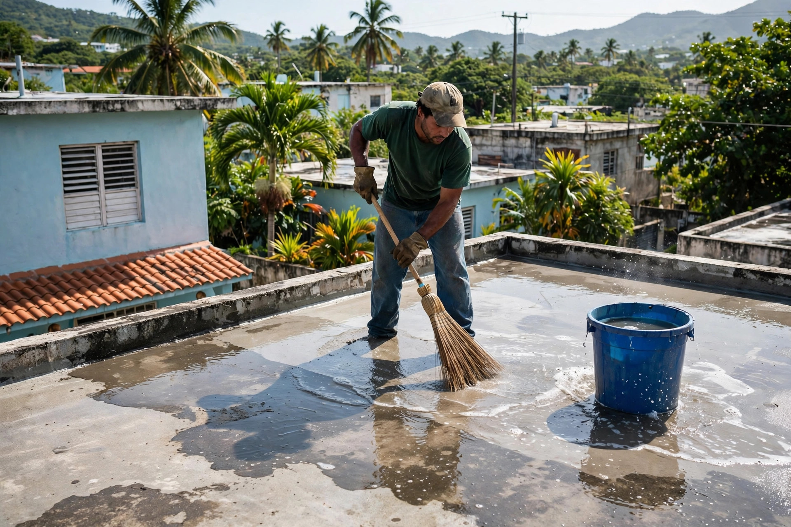
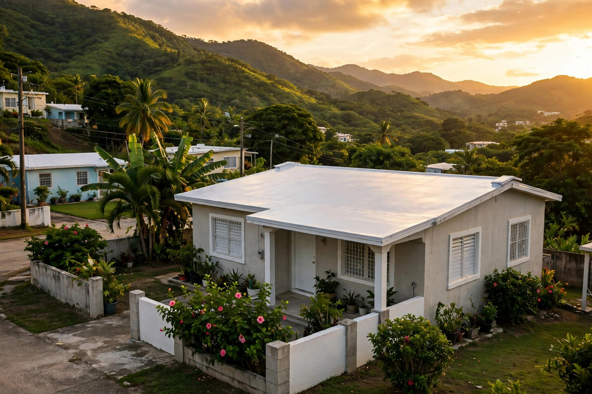

Roofing y servicios generales: sellado de techos, impermeabilización y reparación de filtraciones. Trabajo de la tierra, para la tierra.

Sellado, membrana e impermeabilización: el oficio se ve en el acabado.




Roofing y servicios generales en Hormigueros y pueblos cercanos.
Sistemas de sellado para el clima del oeste.
Membranas y sistemas impermeables.
Buscamos el origen y lo corregimos de raíz.
Mantenimiento y reparaciones del hogar.
Juntas, drenajes y penetraciones bien selladas.
Escríbenos por WhatsApp y cotizamos.
De Hormigueros para el oeste: trato directo y trabajo bien hecho.
Estamos en la Carr 114 Km 1.4, Valle Hermosillo Sur.
El techo y el mantenimiento general en un solo equipo.
Limpieza y corrección antes de sellar: sin atajos.
Cotización por WhatsApp al 787-833-0728.
Lo que todo dueño de casa pregunta antes de sellar su techo.
Depende del sistema aplicado y de la exposición al sol y la lluvia. Se recomienda revisar el techo antes de la temporada de lluvia para decidir si toca mantenimiento.
Sí. Se corrigen las grietas y los puntos donde se empoza el agua antes de aplicar el sellado, para que el sistema quede parejo y funcione bien.
Sí, la limpieza con lavado a presión es parte de la preparación: deja la superficie lista para que el sellador adhiera correctamente.
Por WhatsApp al 787-833-0728 o llamando al mismo número. Envíanos fotos del techo y te respondemos.
En la Carr 114 Km 1.4, Valle Hermosillo Sur, Hormigueros. Servimos Hormigueros y pueblos cercanos.
Cotización inmediata
Completa el formulario y te abrimos WhatsApp con tu solicitud lista para enviar.
Esta página es una muestra de lo que hacemos en ManuPro. Llevamos tu negocio a internet con oferta de lanzamiento por tiempo limitado.